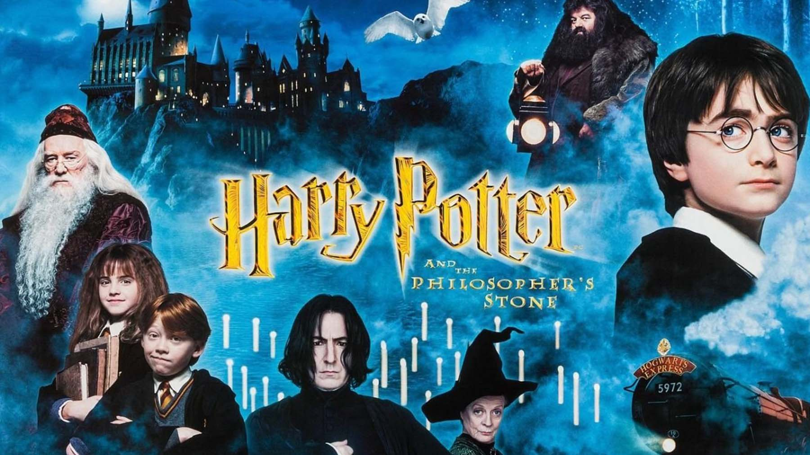
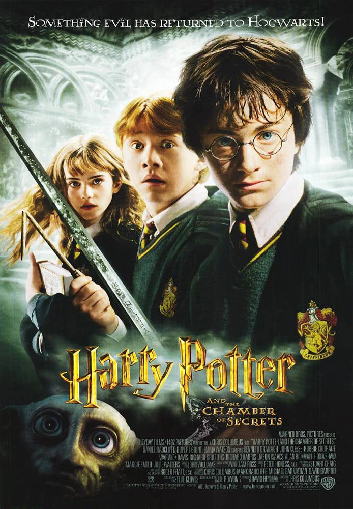
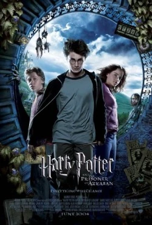
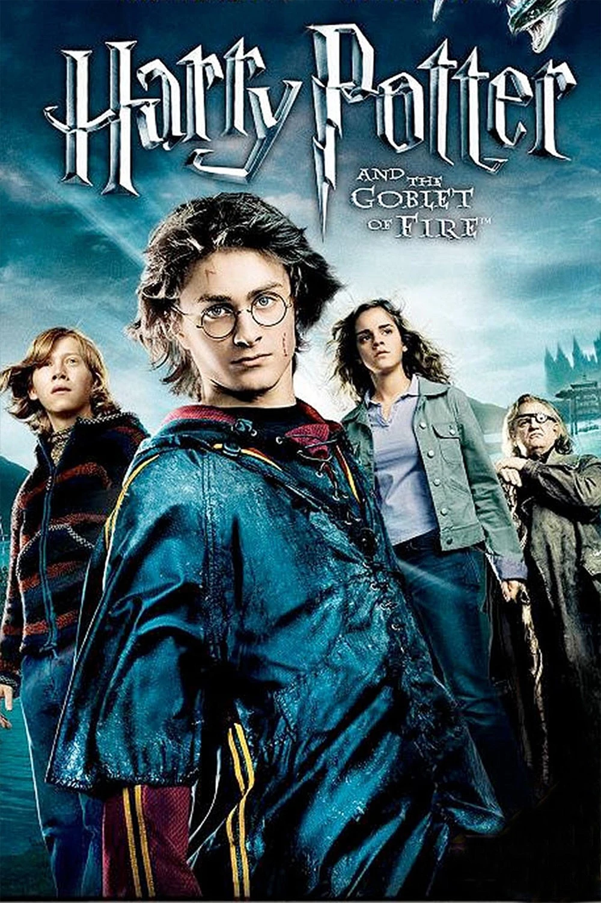
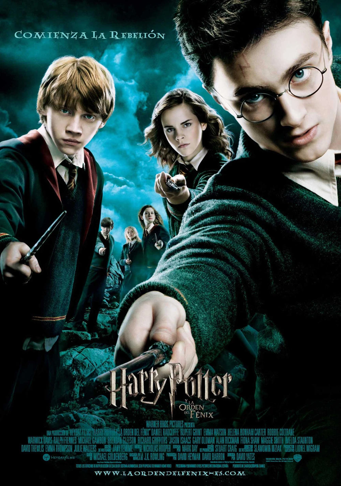
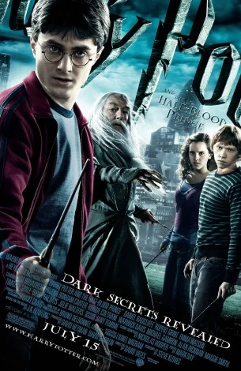
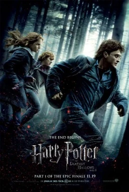
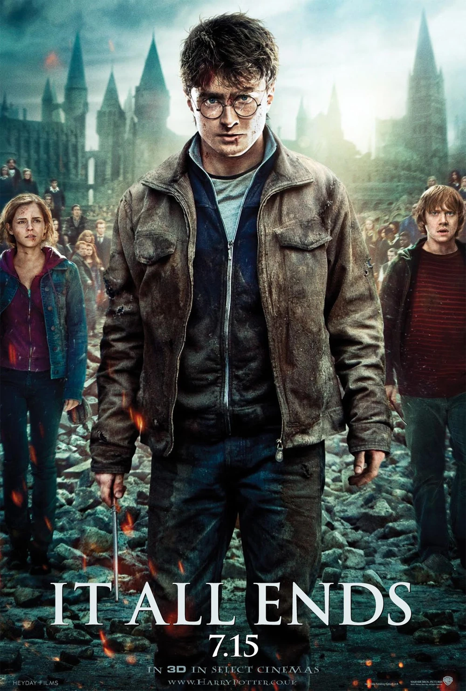
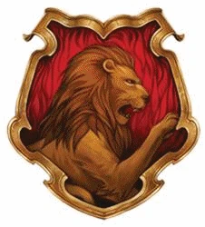

- …el nombre de Nagini proviene de los Naga, criaturas mitológicas con forma de serpiente de la cultura indonesia?
- …los Patronus de Fred y George Weasley son urracas?
- …el libro favorito de J. K. Rowling de la serie Harry Potter es Harry Potter y las Reliquias de la Muerte?
PELICULAS
Harry Potter y la piedra filosofal
La adaptación cinematográfica de Harry Potter y la piedra filosofal fue la primera adaptación al cine de la serie de Harry Potter estrenada en 2001. Está protagonizada por Daniel Radcliffe como Harry Potter, Rupert Grint como Ron Weasley, y Emma Watson como Hermione Granger, y fue dirigida por Chris Columbus.

harry Potter y la cámara secreta
La versión cinematográfica de Harry Potter y la cámara secreta se basa en el segundo libro de la serie, Harry Potter y la cámara secreta. Fue dirigida por Chris Columbus y Steve Kloves fue el guionista.

Harry Potter y el prisionero de Azkaban
La adaptación cinematográfica de Harry Potter y el prisionero de Azkaban incluye la trama básica del libro, sin embargo, la historia se centra también en las dificultades de la adolescencia.

Harry Potter y el cáliz de fuego
La versión cinematográfica de Harry Potter y el cáliz de fuego fue estrenada el 18 de noviembre de 2005. Está dirigida por Mike Newell. Patrick Doyle compuso la música de la película. La película está protagonizada por los adolescentes Emma Watson como Hermione Granger, Rupert Grint como Ron Weasley y Daniel Radcliffe en el papel principal como Harry Potter.

Harry Potter y la Orden del Fénix
La adaptación cinematográfica de Harry Potter y la Orden del Fénix fue estrenada el 11 de julio de 2007 y está basada en Harry Potter y la Orden del Fénix. Fue dirigida por David Yates y el guión fue escrito por Michael Goldenberg.

Harry Potter y el misterio del príncipe
Voldemort va tomando control tanto del mundo Muggle como del mundo de la magia, y Hogwarts ya no es el lugar seguro que solía ser. Harry sospecha que tal vez hasta el castillo sea peligroso. Dumbledore sabe que la batalla final se aproxima, y por eso quiere preparar a Harry. Con ese fin, Dumbledore busca la ayuda de su viejo amigo y colega, el profesor Horace Slughorn, que cree que tiene información muy importante. Entre tanto, entre las paredes de la escuela, los estudiantes se encuentran afectados por algo que siempre ataca a los adolescentes: las hormonas.

Harry Potter y las Reliquias de la Muerte: Parte 1
Es la primera parte de la adaptación cinematográfica del libro Harry Potter y las Reliquias de la Muerte de la escritoraJ.K. Rowling. David Yates dirigió ambas partes y Steve Kloves escribió el guión. Esta primera parte fue estrenada el 19 de noviembre de 2010.

Harry Potter y las Reliquias de la Muerte: Parte 2
es la segunda entrega de una película de dos partes, basada en Harry Potter y las Reliquias de la Muerte de J.K. Rowling, y la película final en la saga de Harry Potter. David Yates, quien dirigió las dos anteriores películas, es el director de ambas partes, y Steve Kloves vuelve a ser el guionista. La primera parte fue lanzada internacionalmente el 18 de noviembre de 2010 en los Estados Unidos, y la segunda, el 15 de julio de 2011.


«Las cuatro casas se llaman Gryffindor, Hufflepuff, Ravenclaw y Slytherin. Cada casa tiene su propia noble historia y cada una ha producido notables brujas y magos.